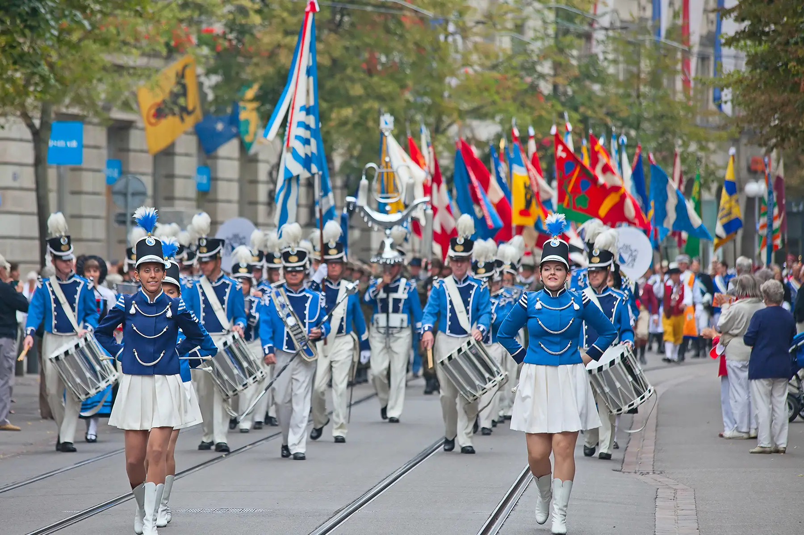
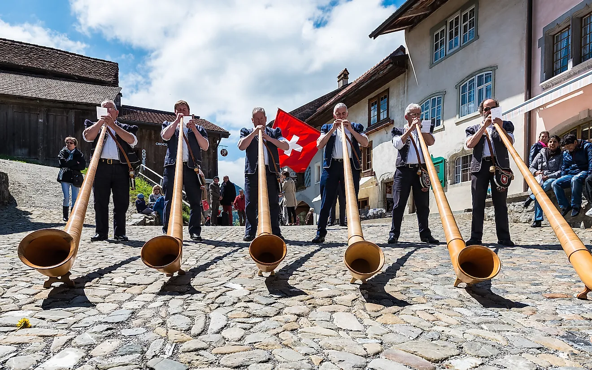

Switzerland is one of the world’s wealthiest countries. The Swiss are well known for their watches and clocks. There is not a single official language in Switzerland. People speak one of several languages, including Swiss German, French, and Italian. Switzerland’s high quality of life, excellent healthcare system, and beautiful natural landscapes make it an extremely appealing destination for expats. The Swiss place a lot of importance on good manners and polite behavior. It is a custom of giving flowers or a small gift, such as chocolate, books, wine, or candy, when visiting someone in their home. Swiss people love nothing more than to pull out the traditional dress of Switzerland which was worn by their ancestors, and parade through the streets. Nowadays Swiss people generally wear whatever makes them feel comfortable.
 